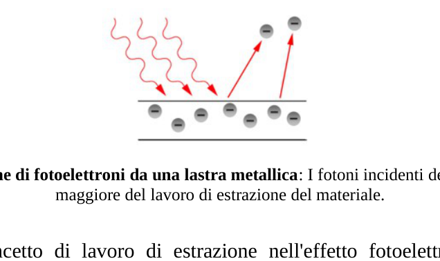
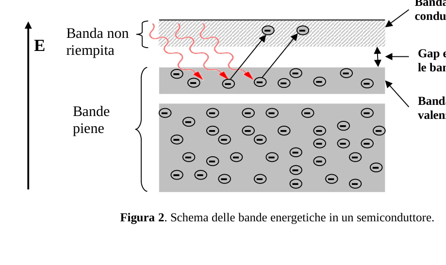
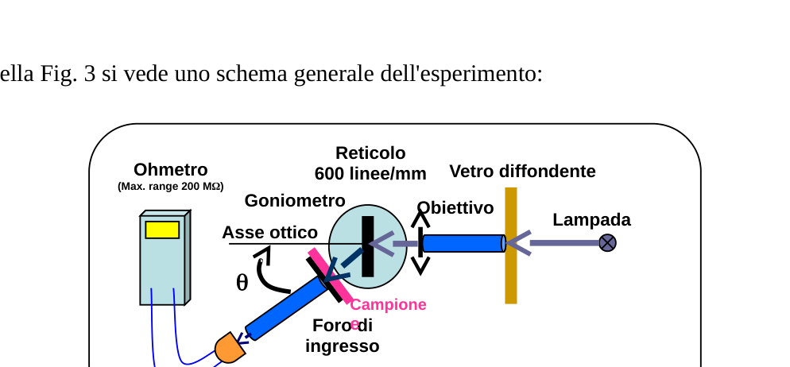
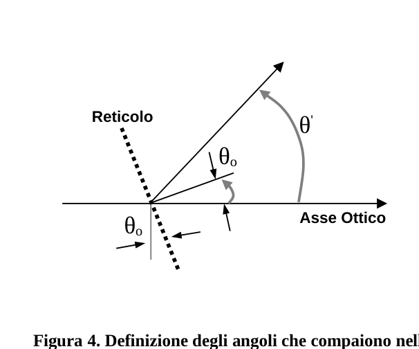

a sperimentale
Problema sperimentale Determinazione della “gap” di energia di un strato sottile di materiale semiconduttore I. Introduzione I semiconduttori possono, a grandi linee, essere caratterizzati come materiali le cui proprieta’ elettriche stanno in qualche modo fra quelle dei conduttori e quelle degli isolanti. Per comprendere le proprietà elettroniche dei semiconduttori si può cominciare con l’effetto fotoelettrico che è un fenomeno ben conosciuto. L’effetto fotoelettrico è un fenomeno elettronico quantistico in cui dei fotoelettroni vengono emessi dalla materia in seguito all’assorbimento di sufficiente energia dal campo elettromagnetico (cioé fotoni). L’energia minima necessaria per l’emissione di elettroni da un metallo in seguito ad irradiazione luminosa (fotoelettrone) è chiamata lavoro di estrazione. In tal modo solo i fotoni con una frequenza maggiore di una soglia caratteristica, cioé con l’energia ( è la costante di Planck) maggiore del lavoro di estrazione del materiale, sono in grado di estrarre fotoelettroni. Figura 1. Emissione di fotoelettroni da una lastra metallica: I fotoni incidenti devono avere energia maggiore del lavoro di estrazione del materiale. In effetti il concetto di lavoro di estrazione nell’effetto fotoelettrico è simile al concetto di gap energetica di un materiale semiconduttore. In fisica dello stato solido la gap è la differenza di energia fra il massimo della banda di valenza e il minimo della banda di conduzione degli isolanti e semiconduttori. Nei semiconduttori la Figura 2. Schema delle bande energetiche in un semiconduttore. 1 Banda di conduzione Banda non riempita Bande piene E Gap energetica fra le bande Banda di valenza
banda di valenza è completamente riempita di elettroni mentre la banda di conduzione è vuota; tuttavia gli elettroni possono passare dalla banda di valenza a quella di conduzione se acquistano sufficiente energia (per lo meno uguale alla gap energetica). La conduttività del semiconduttore dipende fortemente dalla sua gap energetica. Si può controllare, o modificare, la gap di un materiale controllando la composizione di certe leghe semiconduttrici. Recentemente si è visto che si può cambiare la gap modificando la nanostruttura del semiconduttore. In questo esperimento otterremo la gap energetica di un semiconduttore a strato sottile che contiene delle catene di nanoparticelle di sesquiossido di ferro (Fe2O3) utilizzando una tecnica ottica. Per misurare la gap studiamo le proprietà di strati trasparenti utilizzando il loro spettro di trasmissione ottica. In termini generali lo spettro di assorbimento mostra un brusco aumento quando l’energia dei fotoni incidenti raggiunge l’energia della gap. II. Montaggio sperimentale Sul tavolo trovi i seguenti oggetti:
- Una grande scatola bianca che contiene uno spettrometro con una lampada alogena;
- Una scatola piccola che contiene un campione, un vetrino, un portacampioni, un reticolo, e una fotoresistenza.
- un multimetro;
- una calcolatrice;
- un righello;
- uno schermo con un foro al suo centro;
- alcune etichette. Lo spettrometro contiene un goniometro con una precisione di 5’. La lampada alogena serve come fonte di radiazione e viene istallata sul braccio fisso dello spettrometro (per informazioni dettagliate vedi la “Descrizione dell’apparecchiatura” in questo fascicolo). La scatola piccola contiene i seguenti componenti:
- Un portacampioni con due finestre: in una è montato un vetrino ricoperto con uno strato di Fe2O3 e nell’altra è montato un vetrino non ricoperto.
- Una fotoresistenza montata sul suo sostegno, che funziona come rivelatore di luce.
- Un reticolo di diffrazione per trasmissione (600 linee/mm). 2 Nota: non toccare la superficie ottica di nessuno di questi componenti
Nella Fig. 3 si vede uno schema generale dell’esperimento: Figura 3. Schema generale dell’apparato sperimentale. III. Teoria Per ottenere la trasmissione dello strato sottile in funzione della lunghezza d’onda , si può usare la formula seguente: (1) dove e sono, rispettivamente, l’intensità della luce trasmessa dal vetrino ricoperto con lo strato sottile e quella trasmessa dal vetrino non ricoperto. Il valore di I può essere misurato utilizzando un rivelatore di luce, come una fotoresistenza. In una fotoresistenza la resistenza elettrica diminuisce quando l’intensità della luce incidente aumenta. Allora il valore di I può essere determinato dalla relazione seguente: (2) dove R è la resistenza elettrica della fotoresistenza e C è un coefficiente che dipende da . Il reticolo in trasmissione dello spettrometro diffrange lunghezze d’onda diverse ad angoli diversi. Perciò, per studiare le variazioni di T in funzione di , basta cambiare l’angolo ( )fra il braccio dove c’è la fotoresistenza e l’asse ottico, definito come la direzione del fascio di luce che incide sul reticolo, vedi Figura 4. Tenendo conto della equazione fondamentale per la diffrazione da un reticolo: (3) si può ricavare l’angolo che corrisponde ad un particolare valore di : è un numero intero che rappresenta l’ordine di diffrazione, è il passo del reticolo, e è l’angolo che la normale alla superficie del reticolo forma con l’asse ottico. (Fig. 4). In questo esperimento bisogna cercare di porre il reticolo perpendicolarmente all’asse ottico, cioé 0 = 0, ma siccome questo risultato non può essere ottenuto con precisione perfetta valuteremo nel punto 1-e l’errore commesso. 3 Ohmetro (Max. range 200 MΩ) Fotoresistenza Reticolo 600 linee/mm Lampada Vetro diffondente
Foro di ingresso Campione e Goniometro Obiettivo Asse ottico
Figura 4. Definizione degli angoli che compaiono nell’equazione (3). È stato dimostrato sperimentalmente che, per energie dei fotoni di poco superiori alla gap energetica, vale la seguente relazione: (4) dove è il coefficiente di assorbimento dello strato sottile, A è una costante che dipende dal materiale di cui è costituito lo strato, e è una costante determinata dal meccanismo di assorbimento del materiale e dalla struttura dello strato. La trasmissione è legata al valore di attraverso la ben nota formula di assorbimento: (5) Dove è lo spessore dello strato. IV. Procedimento 0. L’apparecchiatura che usi e la scatola che contiene i componenti portano dei numeri. Scrivi sui fogli risposta, negli spazi appositi, il numero dell’apparecchiatura e quello della scatola
- Regolazione e Misure:
1-a
Controlla la scala del nonio del tuo goniometro e trascrivi la precisione massima ( ). 0.1 pt Nota: su richiesta si può avere una lente di ingrandimento (magnifying glass). Fase 1: All’inizio accendi la lampada alogena per riscaldarla. È meglio non spegnerla durante tutto l’esperimento. Siccome la lampada alogena si scalda parecchio fai attenzione a non toccarla. Regola la posizione della lampada lungo il braccio fisso in modo da ottenere un fascio di luce quanto più possibile parallelo (lampada in fondo al tubo). 4 Reticolo Asse Ottico
Fai adesso una regolazione di zero grossolana del goniometro senza utilizzare la fotoresistenza. Sblocca il braccio girevole con la vite 18 (sotto il braccio) e allinea ad occhio il braccio girevole con l’asse ottico. Ora blocca il braccio girevole con la vite 18. Sblocca il nonio con la vite 9 e ruota il supporto del reticolo fino allo zero del nonio. Ora blocca il nonio con la vite 9 ed usa la vite di regolazione fine del nonio (vite 10) per posizionare esattamente lo zero sulla scala del nonio. Metti il reticolo nel suo sostegno. Ruota l’appoggio del reticolo fino a quando il reticolo di diffrazione è pressocché perpendicolare all’asse ottico. Colloca lo schermo col buco di fronte alla sorgente di luce e sistema il buco in modo che un fascio di luce incida sul reticolo. Ruota con attenzione il reticolo finché il fascio di luce riflessa cada sul foro; allora il fascio di luce riflesso coincide con quello incidente. Adesso blocca il supporto del reticolo stringendo la vite 12. 1-b
Misur
p.1 — Emissione di fotoelettroni da lastra metallica

p.1 — Bande di energia in un semiconduttore

p.3 — Schema generale dell’apparato sperimentale

p.4 — Definizione degli angoli nell’equazione

Topic: Modern-Quantum Physics, Wave Optics, Geometric Optics Metodi: Photon Energy Relation, Interference & Diffraction Analysis, Graph Linearization, Experimental Data Analysis, Error Propagation Competenze: Experimental Data Analysis, Graph Linearization, Error Propagation Objects: Diffraction Grating, Screen, Photon, Electron, Lens Fonte: Testo (PDF) — p.1 Soluzione: Soluzioni (PDF)
The test is carried out in accordance with the following conditions:
The experimental problem Determination of the energy gap of a thin layer of a diameter of not more than 30 mm I. The Commission Semiconductors can, in broad terms, be characterised as materials of which: Electrical properties are somehow between conductors and the insulation. In order to understand the electronic properties of semiconductors, one can I’ll start with the photoelectric effect, which is a well-known phenomenon. The Effect Photoelectric is a quantum electronic phenomenon in which photoelectrons are emitted from matter after absorbing sufficient energy from the field electromagnetic (i.e. photons). Minimum energy required for the emission of electrons from a metal following light irradiation (photoelectron) is called Mining work. So only photons with a frequency more than one The energy efficiency of the ( is the Planck constant) greater than They’re also capable of extracting photoelectrons. Figure 1 is shown. Emission of photoelectrons from a metal sheet: The incident photons must have energy The amount of the extraction work is greater than the amount of the extraction work. The concept of extractive work in the photoelectric effect is similar to that of the The concept of energy gap of a semiconductor material. In solid state physics The gap is the difference in energy between the maximum valence band and the minimum the conduction band of insulators and semiconductors. In semiconductors the Figure two. Energy band pattern in a semiconductor. 1 Band of Driving Band not filled Gangs full E Energy gap between The gangs Band of Valence
The valence band is completely filled with electrons while the conduction band is The electrons can be moved from the valence band to the valence band. conduction if they purchase sufficient energy (at least equal to the energy gap). The conductivity of the semiconductor is highly dependent on its energy gap. Si can control or modify the gap in a material by controlling the composition of the use of certain semiconductor alloys. Recently it has been shown that you can change the gap by modifying the nanostructure of the semiconductor. In this experiment we will get the energy gap of a thin-layer semiconductor containing chains of The test chemical shall be used to determine the concentration of the chemical compounds in the test chemical. For To measure the gap, we study the properties of transparent layers using their spectrum of the optical transmission. In general terms, the absorption spectrum shows a sharp Increases when the incident photon energy reaches the gap energy. II. The following information shall be provided: On the table you ‘ll find the following items:
- A large white box containing a spectrometer with a lamp the name of the product;
- A small box containing a sample, a window, a sample holder, a lattice, and a photoresist.
- a multimeter;
- a calculator;
- a rack;
- a screen with a hole in the centre;
- Some labels. The spectrometer contains a goniometer with a precision of 5’. The halogen lamp It serves as a radiation source and is installed on the fixed arm of the spectrometer. (For more details see the “Description of equipment” in this section) the file). The small box contains the following components:
- A window-shaped window with two windows: in one a window covered with One layer of Fe2O3 and an uncovered window is installed in the other.
- A photoresistant mounted on its support, which acts as a detector of
- The light.
- A diffraction lattice for transmission (600 lines/mm). 2 Note: Do not touch the optical surface of any of these components
In the Fig. 3 you see a general scheme of the experiment: Figure 3 is shown. General scheme of the experimental apparatus. The Commission shall adopt implementing acts. Theory To achieve the thin layer transmission according to the wavelength , the following formula may be used: (1) Where e are, respectively, the intensity of the light transmitted by the window The glass is covered with a thin layer and the glass is not covered. The value of I can be measured using a light detector, such as a photoresistant. In The electrical resistance decreases when the light intensity Incident is increasing. So the value of I can be determined by the ratio as follows: (2) where R is the electrical resistance of the photoresistance and C is a coefficient that depends on da . The spectrometer’s transmitting mesh differs in different wavelengths I’m going to go to different angles. So, to study the variations of T as a function of That ‘s enough . change the angle ( ) between the arm where photoresistance is present and the optical axis, defined For example, the direction of the beam of light that hits the lattice, see Figure 4. Taking into account the fundamental equation for diffraction from a lattice: (3) You can get the angle. which corresponds to a particular value of : è un the whole number representing the order of diffraction, is the lattice step, and è the angle the normal to the surface of the lattice forms with the optical axis. (Fig. 4). In This experiment is about trying to put the lattice perpendicular to the axis. This is the same as the optical result, which is 0 = 0, but since this result cannot be obtained exactly We will assess the error in point 1. 3 Ohmeth Max, what’s the matter? range of 200 MΩ) Photoresistance Other, of a kind used for the manufacture of goods 600 lines/mm Lamped Other, of a width of not more than 30 mm
The The entrance Sample e Other instruments The objective Optical axis
Figure 4 is shown. Definition of the angles that appear in the equation (3). It has been experimentally shown that, by photon energies of little The following ratio is used for energy gaps: (4) Where So the absorption coefficient of the thin layer, A is a constant that depends on the material of which the layer is made, and is a constant determined by the the absorption mechanism of the material and the layer structure. La The transmission is linked to the value of through the well-known absorption formula: (5) Where It’s the thickness of the layer. IV. The procedure 0. The equipment you use and the box containing the components bring numbers. Write on the answer sheets, in the appropriate spaces, the number the equipment and the box
- Regulation and Measures:
1-a
Check the nodium scale on your goniometer and transcribe the Maximum accuracy ( ). 0.1 pt Note: on request, a magnifying glass may be provided. Stage one First, turn on the halogen lamp to heat it. It’s better not to turn it off during The whole experiment. Since the halogen lamp is getting very hot, be careful with the Don’t touch her. Adjust the position of the lamp along the fixed arm so that a beam of light as parallel as possible (lamp at the bottom of the tube). 4 Other, of a kind used for the manufacture of goods Optical axis
Now you do a rough zero adjustment of the goniometer without using the The photoresistance. Unlock the rotating arm with the screw 18 (under the arm) and align to The eye rotates the arm with the optical axis. Now block the rotating arm with the screw. 18. Unlock the nonium with the screw 9 and rotate the lattice support to zero I’m not sure. Now block the nodium with the 9th screw and use the nodium end-regular screw. (Wheel 10) to place exactly zero on the nodium scale. Put the lattice in its support. Rotate the support of the lattice until the The diffraction lattice is almost perpendicular to the optical axis. Put the screen on . with the hole in front of the light source and set the hole so that a beam of light It’s on the lattice. Rotate the lattice carefully until the reflected beam falls The beam of reflected light coincides with that incident. Now block the support of the lattice by tightening the screw 12. 1-b
Measurement
The manufacturer shall ensure that the manufacturer is able to provide the manufacturer with the necessary information.
The energy bands in a semiconductor
The test shall be carried out in accordance with the following conditions:
The following equation is used:
Topic: Modern-Quantum Physics, Wave Optics, Geometric Optics Metodi: Photon Energy Relation, Interference & Diffraction Analysis, Graph Linearization, Experimental Data Analysis, Error Propagation Competenze: Experimental Data Analysis, Graph Linearization, Error Propagation Objects: Diffraction Grating, Screen, Photon, Electron, Lens Fonte: Testo (PDF) — p.1 Soluzione: Soluzioni (PDF)